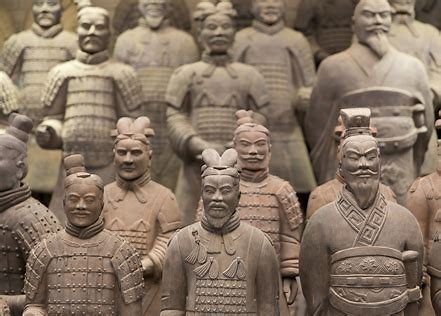
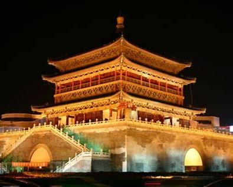
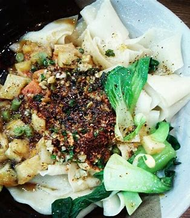
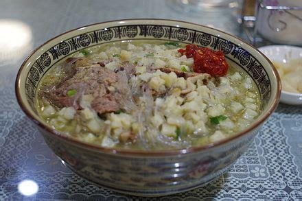

Xi'an: Echoes of Ancient Dynasties
Xi'an, the capital of Shaanxi Province, stands as a monumental testament to China's ancient civilization. Once known as Chang'an (Eternal Peace), it served as the capital for thirteen dynasties, including the influential Qin, Han, and Tang dynasties. This rich history has endowed Xi'an with an unparalleled collection of historical sites and cultural relics.
From the awe-inspiring Terracotta Army, guarding the tomb of China's first emperor, Qin Shi Huang, to the remarkably preserved ancient City Wall, Xi'an offers a journey back in time. The city was also the eastern terminus of the Silk Road, a vital trade route that connected East and West, fostering cultural exchange and economic prosperity for centuries.
Today, Xi'an is a vibrant modern city that carefully preserves its historical legacy. Visitors can explore ancient pagodas, bustling Muslim Quarters brimming with unique street food, and world-class museums, all while experiencing the warm hospitality of the local people.
Xi'an Highlights
Getting To Xi'an
By Air
Xi'an Xianyang International Airport (XIY) serves as the city's primary aviation gateway. The airport offers a wide selection of both domestic and international flights, connecting Xi'an to destinations across the globe. Numerous airlines from different parts of the world operate here, providing convenient and accessible travel options for international tourists. The airport is well-equipped with a variety of facilities, including diverse dining areas, convenient shopping stores, and comfortable passenger lounges.
By Train
Xi'an boasts a well-developed railway network with multiple stations. Xi'an North Station stands as a major high-speed railway hub, connecting Xi'an to numerous cities throughout China via an extensive network of high-speed trains. Travelers can enjoy swift and comfortable journeys to major cities like Beijing, Shanghai, and Guangzhou. In addition to high-speed services, Xi'an Station also serves many regular trains, providing an even greater variety of travel options.
Getting Around Xi'an
Metro
The Xi'an Metro is a highly efficient and convenient way to navigate the city. Its continuously expanding network covers many key areas and attractions. Visitors can utilize the Xi'an Public Transportation Card or purchase single-trip tickets at station vending machines. Mobile payment options like Alipay and WeChat Pay are widely accepted. Trains run frequently, especially during peak hours.
Bus
Xi'an features an extensive bus network with affordable fares (typically 1-2 yuan). Cash (exact amount recommended), the Public Transportation Card, or mobile payments are accepted. Bus routes are marked at stops, but be aware of potential traffic congestion during rush hours.
Taxi / Ride-hailing
Taxis are readily accessible and operate using meters. They can be hailed on the street or found at designated stands. Ride-hailing apps like Didi are also widely used, offering a convenient booking alternative.
Shared Bikes
Shared bikes (e.g., Mobike, Hello Bike) are popular for short distances. Use the corresponding app to unlock and pay. Remember to park them in designated areas.
Sightseeing Bus
Specific sightseeing buses cater to tourists, like the City Wall Sightseeing Bus. Tickets can usually be purchased on board using cash or mobile payment, offering hop-on-hop-off convenience at major sites.
Famous Attractions
Terracotta Army
A world-renowned archaeological wonder, the Terracotta Army is an awe-inspiring collection of thousands of life-sized clay warriors and horses. Each figure boasts unique facial expressions and postures, showcasing the incredible artistry and craftsmanship of ancient China. Standing among these silent guardians, visitors can truly appreciate the grandeur and formidable military might of the Qin Dynasty.
Xi'an City Wall
Xi'an is home to one of the largest and best-preserved ancient city walls in China. Cycling along the top of the wall offers a unique and panoramic view of the city. The wall, complete with its impressive moat and imposing watchtowers, provides a fascinating glimpse into ancient urban defense systems and Xi'an's rich history.
Big Wild Goose Pagoda
Built during the Tang Dynasty, the Big Wild Goose Pagoda is a masterpiece of traditional Buddhist architecture. The pagoda's elegant and soaring structure, along with the historical artifacts housed within its walls, is truly captivating. It stands as an important symbol of Xi'an's rich cultural heritage and its role in the spread of Buddhism in China.
Shaanxi History Museum
The Shaanxi History Museum houses a vast and impressive collection of historical treasures. From ancient bronzes and intricate jade carvings to stunning Tang Dynasty paintings, the museum vividly tells the long and fascinating story of China's history. The exhibits are thoughtfully curated and well-presented, making it a must-visit destination for history enthusiasts.
Huaqing Palace
Huaqing Palace is a famous imperial garden renowned for its beautiful scenery and natural hot springs. The palace complex features exquisite palaces, tranquil gardens, and the legendary love story of Emperor Xuanzong and his consort, Yang Guifei, adds to its romantic allure. Visitors can relax and rejuvenate in the hot springs and immerse themselves in the luxurious atmosphere of imperial China.
Grand Tang Mall
The Grand Tang Mall is a large-scale cultural and commercial pedestrian street located in Xi'an. It vividly recreates the grandeur and prosperity of the Tang Dynasty. At night, the street comes alive with colorful lights, cultural performances, restaurants, and shops, offering an immersive experience.
Bell Tower
The Bell Tower stands as an iconic building in the heart of Xi'an. Built in the Ming Dynasty, this magnificent wooden structure offers fantastic views of the surrounding bustling streets and serves as a timeless symbol of the city's history.
A Taste of Xi'an: Famous Foods
Xi'an's culinary scene is a delightful exploration of bold flavors and unique dishes, reflecting the region's rich agricultural heritage and diverse cultural influences.
Biángbiáng Noodles
A regional specialty known for thick, hand-pulled, wide noodles. Typically topped with chili oil, minced meat, and vegetables, offering a simple yet flavorful and satisfying dish.
Roujiamo (Chinese Hamburger)
A popular street food featuring a crispy, baked bun filled with tender, slow-stewed pork. The contrast between the crusty bun and juicy meat makes it a delicious quick bite.

Yangrou Paomo
A hearty and flavorful lamb soup. Pieces of unleavened pita bread are torn and soaked in the rich broth, becoming soft and tender alongside the savory lamb. A true comfort food.
Liangpi (Cold Noodles)
Chewy cold noodles made from wheat or rice flour, served with a spicy and tangy sauce, often topped with cucumbers and bean sprouts. Refreshing, especially on hot days.
Guan Tang Baozi (Soup Dumplings)
Steamed buns filled with savory meat and hot, flavorful broth. Be careful when eating – bite a small hole first to sip the soup before enjoying the rest.
Hulatang (Spicy Pepper Soup)
A thick, peppery soup often enjoyed for breakfast. It contains various ingredients like beef, vegetables, and vermicelli, known for its warming and spicy kick.
Persimmon Cakes
A sweet treat made from persimmons, often filled with sweet bean paste or nuts, then fried until golden. Popular especially in autumn.
Where to Stay
Inside the City Wall (Near Bell Tower/South Gate)
Central location, close to major attractions like the Bell Tower, Drum Tower, and Muslim Quarter. Offers a mix of hotels from budget hostels to mid-range and boutique options. Convenient for exploring on foot or by metro.
Near Big Wild Goose Pagoda (Qujiang New District)
A modern and greener area south of the City Wall. Home to luxury hotels, the Shaanxi History Museum, and Grand Tang Mall. Well-connected by metro. Offers a more relaxed atmosphere.
Near Xi'an North Railway Station
Convenient for travelers arriving or departing by high-speed train. Primarily business hotels and newer developments. Further from the main historical sites but easily accessible via metro.
Near the Airport (Xianyang)
Suitable for very early or late flights. Mostly airport hotels offering shuttle services. Located quite far from the city center.
Weather Guide
Cold and Dry (Dec - Feb)
Around -1°C to 7°C (30°F - 45°F). Often below freezing, occasional snow. Dry air. Warm layers, coat, hat, gloves essential.
Mild and Variable (Mar - May)
8°C - 22°C (46°F - 72°F). Temperatures rise quickly. Spring can bring dust storms. Layers recommended, light jacket, maybe an umbrella.
Hot and Humid (Jun - Aug)
Above 25°C (77°F), often exceeding 32°C (90°F). High humidity, occasional heavy rain. Light, breathable clothing, sun protection, umbrella.
Cool and Pleasant (Sep - Nov)
10°C - 20°C (50°F - 68°F). Considered the best time to visit. Comfortable temperatures, clear skies. Light jacket, sweaters needed later in the season.
Must-Do List
- Marvel at the Terracotta Army.
- Cycle or walk along the ancient Xi'an City Wall.
- Visit the Big Wild Goose Pagoda and enjoy the fountain show (check schedule).
- Explore the bustling Muslim Quarter and sample street food.
- Try Roujiamo (Chinese Hamburger) and Biangbiang Noodles.
- Visit the Shaanxi History Museum to delve into China's past.
- See the Bell Tower and Drum Tower in the city center.
- Experience the vibrant atmosphere of the Grand Tang Mall at night.
- Taste Yangrou Paomo (Lamb Soup with Bread).
- Consider a Tang Dynasty Show for cultural entertainment.
- Visit the Small Wild Goose Pagoda and Xi'an Museum.
- Try Liangpi (Cold Noodles) for a refreshing snack.
Classic Tour Itineraries
Two-Day Essential Xi'an
Day 1: Arrive. Terracotta Army (allow half a day). Return to city. Explore Muslim Quarter for dinner.
Day 2: Morning cycle/walk on the City Wall. Visit Big Wild Goose Pagoda. Shaanxi History Museum (if time permits). Depart.
Three-Day Historical Immersion
Day 1: Arrive, check in (inside Wall). Shaanxi History Museum. Big Wild Goose Pagoda & evening fountain show.
Day 2: Full day trip to Terracotta Army & Huaqing Palace (optional).
Day 3: Cycle/walk City Wall. Visit Bell & Drum Towers. Explore Muslim Quarter. Depart.
Four-Day Culture & Food Explorer
Day 1: Arrive, check in. Explore Muslim Quarter, try Roujiamo & Liangpi. Bell & Drum Towers.
Day 2: Terracotta Army (half day). Return. Shaanxi History Museum.
Day 3: Cycle/walk City Wall. Big Wild Goose Pagoda. Grand Tang Mall in the evening.
Day 4: Visit Small Wild Goose Pagoda & Xi'an Museum. Try Yangrou Paomo or Biangbiang Noodles for lunch. Depart.